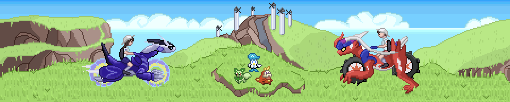

Pokémon (short for "Pocket Monsters") is a globally popular Japanese media franchise featuring creatures with special powers, created in 1996 by Satoshi Tajiri. It centers on humans capturing, training, and battling these creatures in video games, trading cards, and animated series. The franchise is built on themes of friendship, exploration, and strategy. The Concept of Pokémon are fictional creatures, inspired by real animals and insects, possessing elemental types (fire, water, electric, etc.). Trainers (often children) explore, capture Pokémon, and aim to become champions by winning battles, often against Gym Leaders.
In April 1998, Pokémon Center Co., Ltd. is established by the original authors of Pokémon: Nintendo Co., Ltd., Creatures Inc. and GAME FREAK inc. The company name was changed to The Pokémon Company in October 2000. Since then, our business activities have expanded to overall management of the Pokémon brand.
It combines cute, memorable creature designs with a simple yet deep "rock-paper-scissors" style battle system, creating a shared global experience for all ages.
In the beginning there was nothing. What would eventually become the Universe consisted of a formless black mass, hovering over an endless plain of nothingness. That was until an egg appeared. In that moment, Arceus was born, a being of immense, incomprehensible power, and the void radiated with light for the first time. Shaping countless arms from his latent energy, Arceus set to work creating the trio that would finally fertilise its barren existence. He named these children: Dialga, Palkia and Giratina.
Dialga roared into the void, and the concept known as time burst into being. Palkia lifted its arms high, releasing titanic waves of matter into the darkness, and the void became known as space, populated with galaxies, planets and blazing stars. Finally, Giratina’s eyes lit up with a ferocious intensity, and antimatter to oppose Palkia’s matter silently appeared in every corner of space, bringing balance to that chaotic realm. The Universe as we know it had been born. And yet, the peace was short lived. Each seeing its creation as more important than the others, a bitter war erupted between the three children. Time spiralled out of control, threatening to send the Universe back to the chaotic blackness that had ruled before, and space grew unstable once more, pierced by tendrils of antimatter known as black holes. Seeing this, Arceus unleashed his first judgement, banishing each of the trio to their own separate realms, whilst simultaneously locking much of their power into three mysterious orbs. The war was over.
Turning his attention back to creation, Arceus willed three more beings into existence: Groudon, Kyogre and Rayquaza. Not wanting to repeat his past mistakes, he bestowed less of his power upon each of the three, although still enough for them to complete the grand designs he had planned. Picking his favourite of Palkia’s planets, he set his plan into motion.
Groudon raised the land violently, willing massive plumes of molten rock to the surface from deep within the planet’s core. Kyogre covered the rest of the surface with a life giving substance known as water, while Rayquaza filled the remaining area with an atmosphere of “air”. Inevitably, tensions between the three often flared up. Occasionally, large sections of Groudon’s land would disappear into the ocean overnight, or Kyogre’s territory would be invaded by the appearance of a new island. But Arceus had been cunning; this time, a fragile peace was maintained through the intervention of Rayquaza, who acted as a mediator, untouched by either of his siblings. There was only one thing on which all three siblings could agree: a name for their planet, Earth. As Earth aged, it grew more stable, until Groudon and Kyogre were eventually coaxed into taking up a long rest by Rayquaza. Groudon retreated into Earth’s fiery mantle, Kyogre rested within the deepest depths of the ocean and Rayquaza kept watch from above. With the safety of Earth ensured, the next phase of Arceus’ plan could now begin.